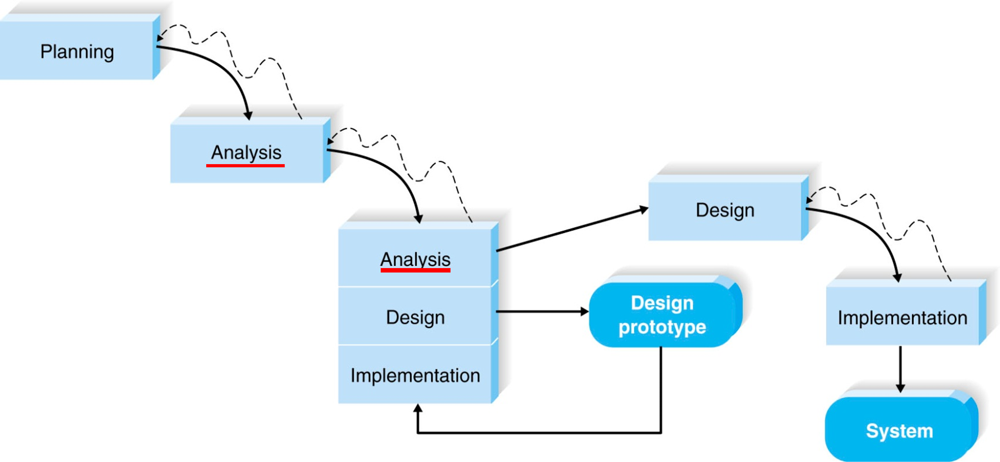
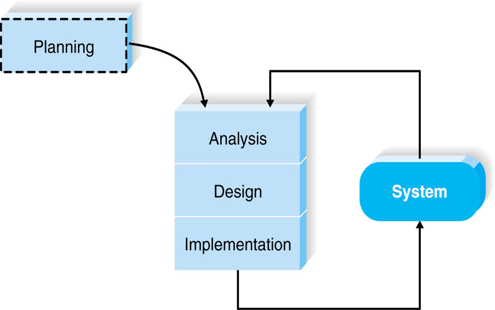

Topic 1: SDLC
FOUR phases of the SDLC?
Planning, Analysis, Design, Implementation
Planning phases
The planning phase is the fundamental process of understanding why an information system should be built, and determining how the project team will go about building it.
Analysis phases
The analysis phase answers the questions of who will use the system, what the system will do, and where and when it will be used.
THREE steps of Analysis phase?
- Analysis strategy
This is developed to guide the projects team's efforts. This includes a study of the current system and its problems, and envisioning ways to design a new system
- Requirements gathering
The analysis of this information leads to the development of a concept for a new system. This concept is used to build a set of analysis models.
- System proposal
The proposal is presented to the project sponsor and other key individuals who decide whether the project should continue to move forward.
Design phases
The design phase decides how the system will operate, in terms of the hardware, software, and network infrastructure; the user interface, forms, and reports that will be used; and the specific programs, databases, and files that will be needed.
FOUR steps of Design phase.
- Design Strategy
This clarifies whether the system will be developed by the company or outside the company.
- Architecture Design
This describes the hardware, software, and network infrastructure that will be used.
- Database and File Specifications
These documents define what and where the data will be stored.
- Program Design
Defines what programs need to be written and what they will do.
Implementation phases
During the implementation phase, the system is either developed or purchased and installed.
List the THREE steps of the implementation phase.
- System Construction
The system is built and tested to make sure it performs as designed.
- Installation
The old system is turned off and the new one is turned on.
- Support Plan
Includes a post-implementation review as well as a systematic way for identifying changes needed for the system.
ALL methodology of SDLC.
Waterfall Development
- A linear and sequential approach to software development, where each phase depends on the previous one and has specific deliverables. The advantage is that it is simple and easy to follow, but the disadvantage is that it is rigid and does not allow for changes or feedback during the process.
Parallel Development
- A variation of waterfall development, where different phases are performed in parallel by different teams. The advantage is that it reduces development time and risks, but the disadvantage is that it requires more coordination and communication among teams.
V-model
- A graphical representation of a systems development lifecycle, where each testing phase corresponds to a development phase in an inverted V-shape. The advantage is that it ensures high quality and verification of requirements, but the disadvantage is that it is inflexible and does not handle changing requirements well.
Iterative Development
- An approach that divides the software development into smaller cycles or iterations, where each iteration produces a working version of the software. The advantage is that it allows for feedback and improvement along the way, but the disadvantage is that it can be difficult to manage complexity and scope creep.
System prototyping
- A type of prototyping where a functional model of the system is built quickly and tested by users before developing the final system. The advantage is that it helps validate user requirements and expectations, but the disadvantage is that it can be costly and time-consuming to refine or discard prototypes.
Throwaway prototyping
- A type of prototyping where a simple model of the system is built only to explore a specific aspect or feature, and then discarded after getting feedback from users or stakeholders. The advantage is that it helps clarify ambiguous or complex requirements, but the disadvantage is that it can lead to waste or confusion if not managed properly. 
Agile Development
- A set of principles and practices for software development that emphasize collaboration, flexibility, customer satisfaction, and continuous delivery. The advantage is that it adapts to changing needs and delivers value faster, but the disadvantage is that it requires more discipline and communication among team members. 
THREE feasibility areas that looked into
- Technical feasibility
extent to which the system can be successfully designed, developed, and installed by the IT group
Can we build it?
- Economic feasibility
also called a cost-benefit analysis, that identifies the costs and benefits associated with the system.
Should we build the system?
- Organizational / Operational feasibility
FOUR major categories in Costs and Benefits Analysis
- Development costs
expenses that are incurred during the creation of the system, usually thought of as one-time costs.
such as salaries of the development staff, hardware and software
- Operational costs
are expense that are required to operate the system, usually thought of as ongoing costs.
such as the salaries for operations staff, software licensing fees, equipment upgrades.
- Tangible benefits
can be quantified and measured easily
- Intangible benefits
results from an intuitive belief that the system provides important
but hard-to-measure benefits to the organization.
Important factors to consider in selecting the development methodology.
- Clarity of User Requirements
- Familiarity with Technology
- System Complexity
- System Reliability
- Short Time Schedules
- Schedule Visibility
Topic 2: Project Management
Project Charter
- Background
Why is the project being undertaken? Describe an opportunity or problem that the project is to address.
- Goals
A few specific & measurable
- Scope
What will be the end result of the project? Describe what phases of work will be undertaken. It?s also important to mention what activities will not be included in this project.
- Key Stakeholders
Such as Sponsor, Project manager, Project team members
- Milestones
What are the major milestones of the project
- Budget
How much money would be spent for the project
- Constraints
Potential factors that will impact the delivery of the project
- Assumptions
The conditions or situations that you are relying on in order to achieve project goals
- Risks and Dependencies
What are the most significant risks? What things must happen before the project is delivered?
Example
Gantt Chart
Example

Advantage
- Gantt chart is a common technique for representing phases and activitie of a project, most people can understand it.
Disadvantage
- it don't have task dependencies
- Larger Gantt charts may not be suitable for most computer displays.
PERT Chart
Example
Topic 3: Analysis & Design Techniques
Part 2
Architecture Design
- Plans for how the system will be distributed across multiple computers and what hardware, operating system software, and application software will be used for each computer.
FOUR key architectural components of Architecture Design
- Data storage.
- Data access logic
- Application logic
- Presentation logic
THREE primary hardware components
- Client computers
- Servers
- Network
Part 3
THREE fundamental parts of UI
- Navigation mechanism
the way in which the user tells the system what to do.
- Input mechanism
the way in which the system captures information.
- Output mechanism
the way in which the system provides information to the user or to other systems.
- GUI use windows, menus, icons, etc., and are the most common type of user interfaces.
FOUR common approaches to interface evaluation
- Heuristic evaluation
Compare the interface to a checklist of design principles.
- Walk-through evaluation
It is a meeting conducted with the users to walk through the interface.
- Interactive evaluation
Users try out the interface.
- Formal usability testing
It is a formal testing process to understand how usable the interface is.
THREE basic software approaches for defining user commands
- Languages
command language and natural language.
- Menus
A menu presents the user with a list of choices.
- Direct Manipulation
With direct manipulation, the user enters commands by working directly with interface objects.
THREE common approaches to interface design prototyping
- Storyboards
shows hand-drawn pictures of screens.
- HTML prototypes
built with the use of Web pages created in HTML.
- Language prototypes
an interface design prototype built in the actual language or by the actual that will be used to build the system.